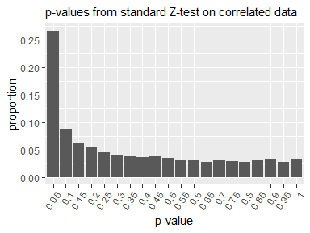
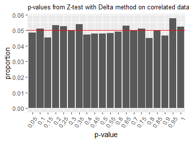

1. Overview
In online A/B testing, we often face a significant practical challenge: the randomization unit differs from the analysis unit. Typically, control and treatment groups are randomly assigned at the user level, while metrics—such as click-through rate—are measured at a more granular level (e.g., per page-view). In this case, the randomization unit is user, but the analysis unit is page-view.
This discrepancy raises concerns for statistical hypothesis testing, which assumes that data points are independent and identically distributed (i.i.d.). Specifically, a single user can generate multiple page-views, and each user may have a different probability of clicking. Consequently, the data may exhibit within-user correlation, thereby violating the i.i.d. assumption.
When the standard Z-test is applied to such correlated data, the resulting p-values do not follow the expected uniform distribution under the null hypothesis. As a result, smaller p-values tend to occur more frequently even when there is no true difference, increasing the risk of falsely detecting a significant difference.

To address this problem, Deng et al. (2018) proposed a modified statistical hypothesis testing method. Their approach replaces the standard variance estimation formula in the Z-test with an approximate formula derived via the Delta method, which accounts for within-user correlation. To simplify the application of this method, the deltatest package has been developed.
To illustrate how to use this package, we prepare a data frame that includes columns for the number of clicks and page-views aggregated for each user. This data frame also contains a column indicating whether each user was assigned to the control or treatment group.
library(dplyr)
n_user <- 2000
set.seed(314)
data <- deltatest::generate_dummy_data(n_user) |>
mutate(group = if_else(group == 0, "control", "treatment")) |>
group_by(user_id, group) |>
summarise(clicks = sum(metric), pageviews = n(), .groups = "drop")
data
#> # A tibble: 2,000 × 4
#> user_id group clicks pageviews
#> <int> <chr> <int> <int>
#> 1 1 treatment 1 6
#> 2 2 treatment 2 11
#> 3 3 control 0 17
#> 4 4 control 4 12
#> 5 5 control 5 10
#> 6 6 control 1 15
#> 7 7 control 2 6
#> 8 8 treatment 2 11
#> 9 9 treatment 2 16
#> 10 10 control 0 17
#> # ℹ 1,990 more rowsThe statistical hypothesis test using the Delta method can then be performed on this data as follows:
library(deltatest)
deltatest(data, clicks / pageviews, by = group)
#>
#> Two Sample Z-test Using the Delta Method
#>
#> data: clicks/pageviews by group
#> Z = 0.31437, p-value = 0.7532
#> alternative hypothesis: true difference in means between control and treatment is not equal to 0
#> 95 percent confidence interval:
#> -0.01410593 0.01949536
#> sample estimates:
#> mean in control mean in treatment difference
#> 0.245959325 0.248654038 0.002694713This version of the Z-test yields p-values that follow the expected uniform distribution under the null hypothesis, even when within-user correlation is present.

2. Installation
You can install the deltatest package from CRAN.
install.packages("deltatest")You can also install the development version from GitHub with:
# install.packages("remotes")
remotes::install_github("hoxo-m/deltatest")3. Details
The deltatest package provides the deltatest function for performing statistical hypothesis tests using the Delta method as proposed by Deng et al. (2018). In this section, we explain the function’s arguments and its return value.
3.1 data Argument
To run deltatest, you need to prepare an appropriately aggregated data frame. This data frame must include columns for the numerator and denominator of your metric, aggregated for each randomization unit (typically, each user). For example:
- If your metric is click-through rate per page-view, the numerator is the number of clicks, and the denominator is the number of page-views.
- If your metric is conversion rate per session, the numerator is the number of conversions (or converted sessions), and the denominator is the number of sessions.
Note that the denominator should match the analysis unit.
The deltatest package provides the generate_dummy_data function to create dummy data. It generates metric values per page-view, so you need to aggregate the data by user.
library(dplyr)
n_user <- 2000
set.seed(314)
data <- deltatest::generate_dummy_data(n_user) |>
group_by(user_id, group) |>
summarise(clicks = sum(metric), pageviews = n(), .groups = "drop")
data
#> # A tibble: 2,000 × 4
#> user_id group clicks pageviews
#> <int> <int> <int> <int>
#> 1 1 1 1 6
#> 2 2 1 2 11
#> 3 3 0 0 17
#> 4 4 0 4 12
#> 5 5 0 5 10
#> 6 6 0 1 15
#> 7 7 0 2 6
#> 8 8 1 2 11
#> 9 9 1 2 16
#> 10 10 0 0 17
#> # ℹ 1,990 more rowsThis data frame includes the user_id column, but this column is not required to run deltatest.
3.2 formula and by Arguments
The second argument, formula, and the third argument, by, specify which columns in the data frame represent the numerator, denominator, and group. There are three input styles available for the formula argument.
(1) Standard Formula
This is the common formula format, where the left-hand side represents the target variable, and the right-hand side specifies the explanatory variable. In this case, the left-hand side should be of the form numerator / denominator, and the right-hand side should be the group column name. When using this style, you do not need to specify the by argument.
deltatest(data, clicks / pageviews ~ group)(2) Lambda Formula
This is a relatively new way to express functions within a formula, where the function is written on the right-hand side of the formula. Specifically, you can write the function as ~ numerator / denominator. In this style, you must specify the group column using the by argument.
deltatest(data, ~ clicks / pageviews, by = group)(3) NSE (Non-Standard Evaluation)
In this style, you can simply write numerator / denominator. The input is parsed using R’s non-standard evaluation (NSE) feature, and you must specify the group column using the by argument.
deltatest(data, clicks / pageviews, by = group)With Calculation (Applicable to All Styles)
All styles accept calculations. For example, if your data frame contains only columns for the positive count and negative count, you can express the metric as follows:
deltatest(data, pos / (pos + neg), by = group)3.3 Other Arguments
group_names
For this argument, list the two types of elements in the group column in the order of control and treatment. By default, the function assumes that the types are specified in dictionary order for this argument and will display a message to that effect. To suppress the message, set the quiet argument to TRUE.
3.4 Return Value
The return value of deltatest is an object of class htest.
result <- deltatest(data, clicks / pageviews, by = group)
result
#>
#> Two Sample Z-test Using the Delta Method
#>
#> data: clicks/pageviews by group
#> Z = 0.31437, p-value = 0.7532
#> alternative hypothesis: true difference in means between control and treatment is not equal to 0
#> 95 percent confidence interval:
#> -0.01410593 0.01949536
#> sample estimates:
#> mean in control mean in treatment difference
#> 0.245959325 0.248654038 0.002694713This object contains the estimates, the p-value, the confidence interval, and more.
result$estimate
#> mean in control mean in treatment difference
#> 0.245959325 0.248654038 0.002694713
result$p.value
#> [1] 0.7532436
result$conf.int
#> [1] -0.01410593 0.01949536
#> attr(,"conf.level")
#> [1] 0.95You can also tidy the results by applying the tidy function from the broom package.
broom::tidy(result)
#> # A tibble: 1 × 9
#> estimate est_ctrl est_treat statistic p.value conf.low conf.high method
#> <dbl> <dbl> <dbl> <dbl> <dbl> <dbl> <dbl> <chr>
#> 1 0.00269 0.246 0.249 0.314 0.753 -0.0141 0.0195 Two Sample Z…
#> # ℹ 1 more variable: alternative <chr>For more details, refer to help(deltatest).
5. References
- Deng, A., Knoblich, U., & Lu, J. (2018). Applying the Delta Method in Metric Analytics: A Practical Guide with Novel Ideas. Proceedings of the 24th ACM SIGKDD International Conference on Knowledge Discovery & Data Mining. doi:10.1145/3219819.3219919
- Deng, A., Lu, J., & Litz, J. (2017). Trustworthy Analysis of Online A/B Tests: Pitfalls, challenges and solutions. Proceedings of the Tenth ACM International Conference on Web Search and Data Mining. doi:10.1145/3018661.3018677
- id:sz_dr (2018). Calculating the Mean and Variance of the Ratio of Random Variables Using the Delta Method [in Japanese]. If You’re Human, Think More Now. https://www.szdrblog.info/entry/2018/11/18/154952